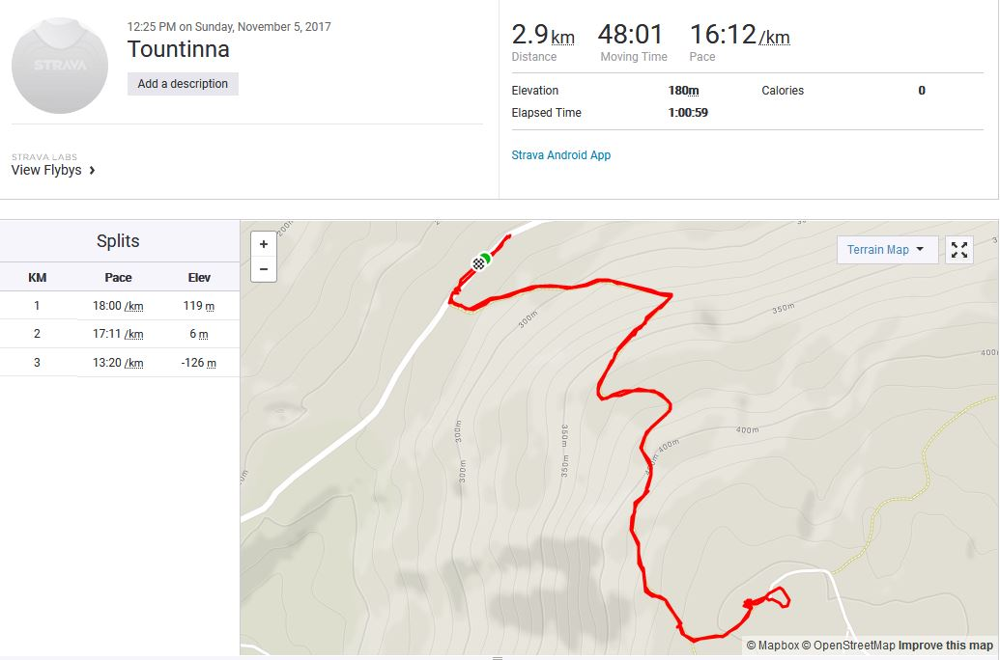
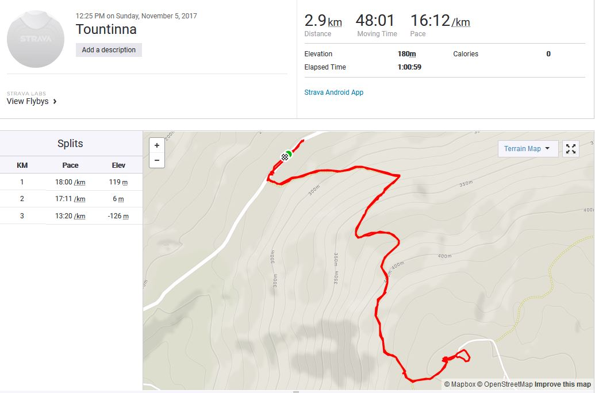
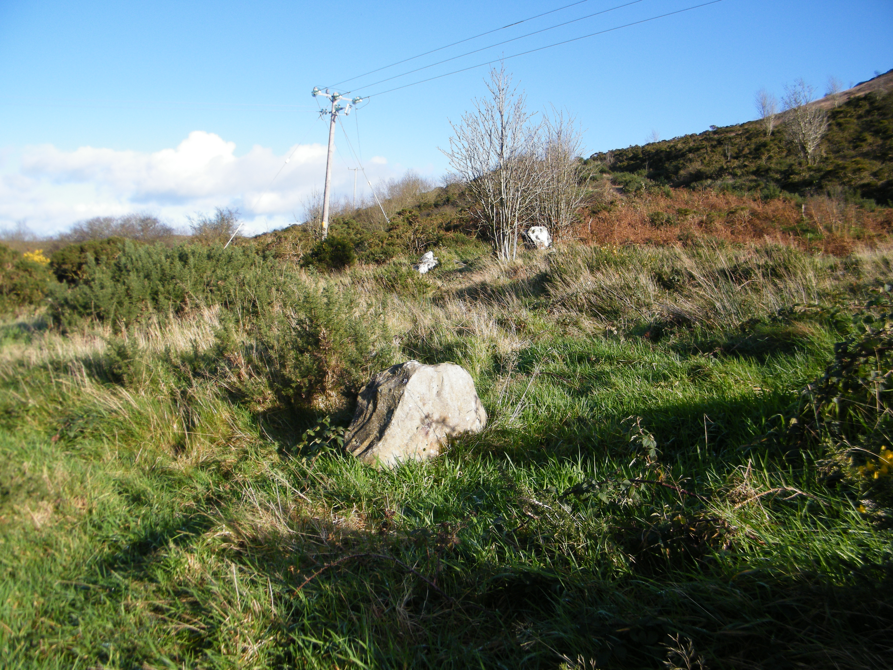
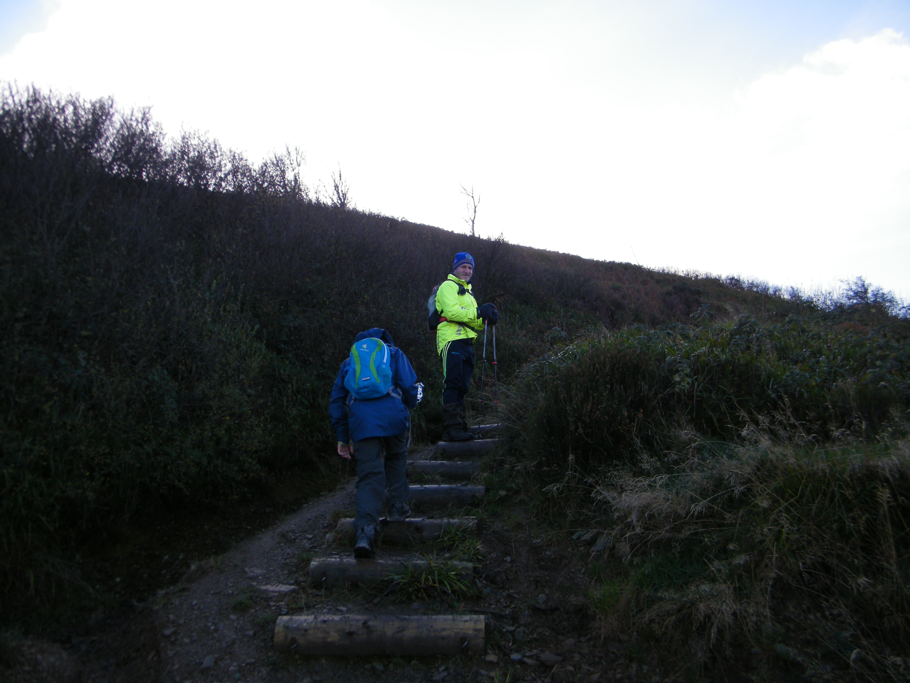
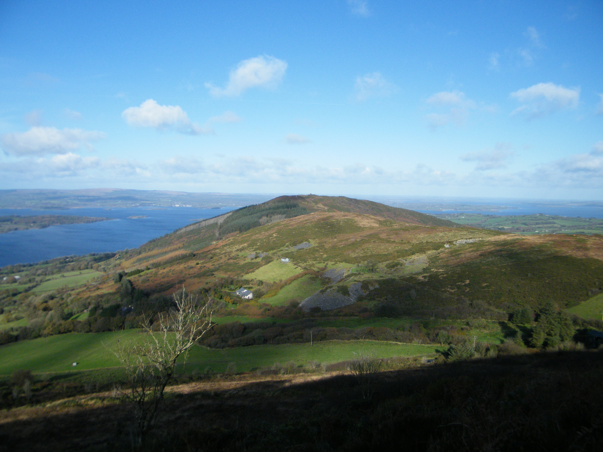
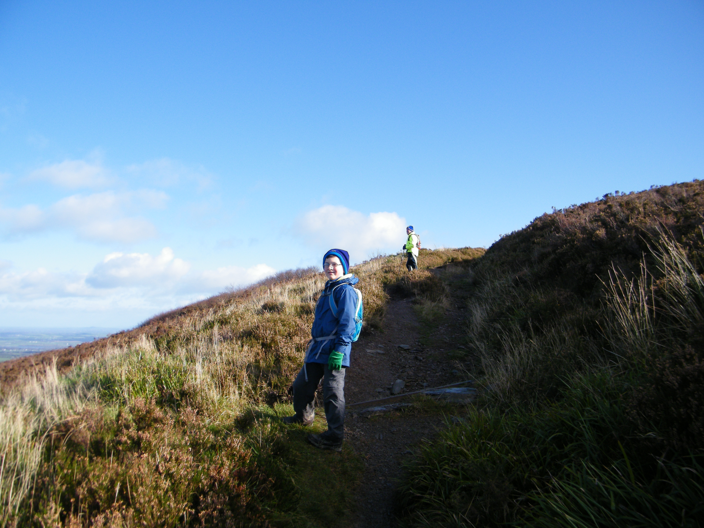
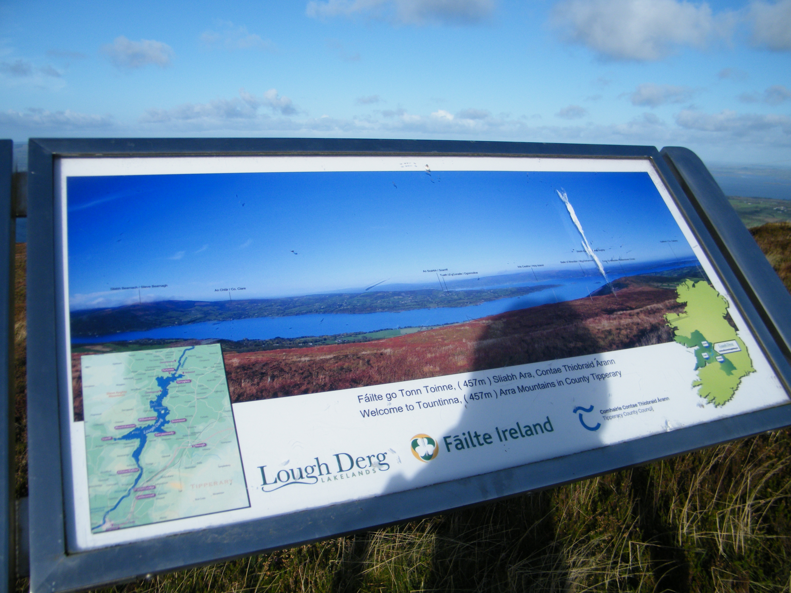
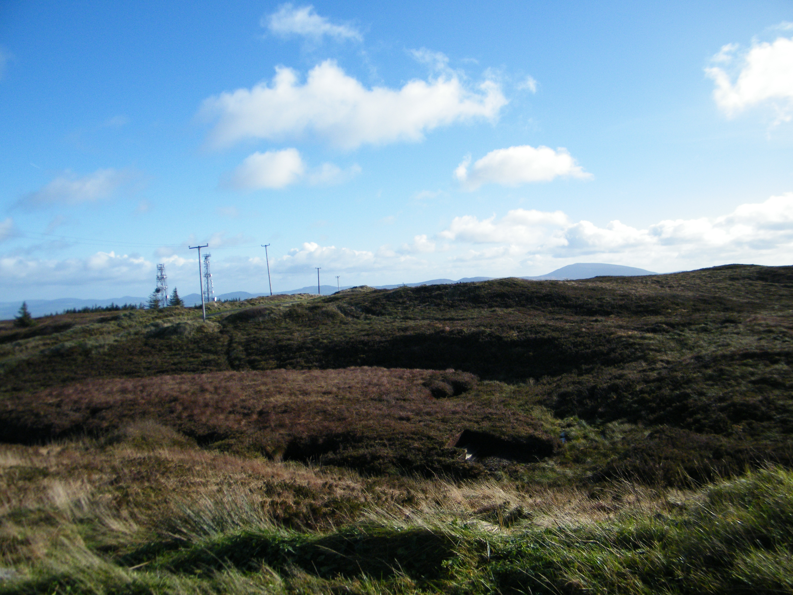
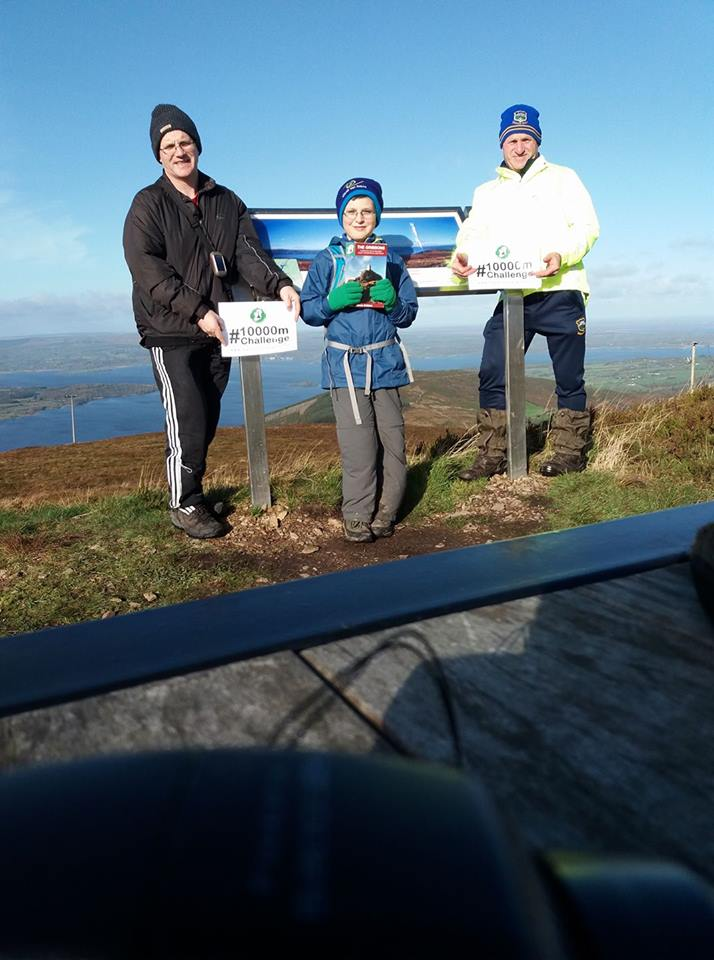

This mountain is on The Gribbon List, it will be part of the total metres for my Ten Thousand Metre Challenge, a fundraiser for Mountain Rescue Ireland, you can support by donating at High Point Ireland 10,000m Challenge 2017 fundraiser page.
 
Map.
The Graves of the Leinster men, where we started the climb of Tountinna.
Setting off.
Great views of Lough Derg.
Admiring the views.
Information board at the top of Tountinna #Tountinna457m.
Silvermines in the background from the top of Tountinna the highest point of the Arra Mountains.
Another 457m for the Ten Thousand Metre Challenge.

Come on boys.